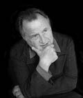

RÉGIS DEBRAY
Jochen Winter'in uyarladığı versiyondan tercüme edilmiştir.
Yazar ve filozof Régis Debray 1940 yılında Paris'te doğdu. Avukat bir baba ile bir direnişçi olan ve gelecekte de Gaulle'cü bir senatör olacak Janine Alexandre-Debray'ın oğludur. Debray felsefe tezini 1961 yılında Sorbonne'da vererek New York'a gider. 1962 yılında Venezuella'daki gerilla üzerine bir belgesel çekmek için gerilla gibi yaşayacaktır. Fransa'ya geri döndüğünde, başka şeylerin yanı sıra Sartre'ın dergisi Les Temps Modernes'de Latin Amerika'daki kurtuluş mücadelesi üzerine metinler yayımlar. Nisan 1967 yılında Debray Bolivyalı subaylar tarafından tutuklanır ve otuz yıl hapse mahkûm edilir, uluslararası bir protesto kampanyasının ardından üç yılın sonunda hapisten çıkar. Tutukluluk döneminden sonra Debray Şilili şair Pablo Neruda'nın evinde yaşar ve burada Salvador Allende'yle uzun bir söyleşi gerçekleştirir. Daha ileride, Debray kendi devrimci geçmişiyle arasına açık seçik bir mesafe koyar. 1981 yılında François Mitterrand'ın zaferinden sonra, başkanın Üçüncü Dünya işlerinde danışmanı olur. Regis Debray, medyaya –mediyolojinin kurucusudur– ve yakın dönemde de dine yönelik çok sayıda deneme yayımladı.
2002 yılında Din Bilimleri Avrupa Enstitüsü'ne başkan olarak atanır. 2005 yılında Médium, transmettre pour innover adlı dergiyi Babylone yayınlarından çıkartmaya başlar. Belli başlı eserleri arasında şunları sayabiliriz: Le Pouvoir Intellectuel en France (Ramysay, 1979), Vie et mort de l'image (Gallimard, 1992), Dieu, un itinéraire (O. Jacob, 2002, Combourg Ödülü), Le Feu Sacré. Fonctions du Religieux (Fayard, 2003), Aveuglantes Lumières. Journal en clair-obscur (Gallimard, 2006).

DEBRAY
Régis Debray, eserinizin yelpazesi politik angajmandan politolojik analize, medyada bizzat yer almaktan yöntemleriyle eleştirel bir çatışmaya girilmesine, yeni türde bir mediyolojiye, çağdaş tarihe bağlı sorunların incelenmesinden sanat, felsefe ve din üzerine yoğun bir çalışmaya uzanmaktadır. Sizin metinlerinizde görülen o ki sizin ilginizi uyandıran şey dinin kendisinden ziyade din fenomenidir. Bu ayrımı bize belirtir misiniz?
Din kurum fikrine bağlıdır, örneğin kilise ya da ruhban ve onun da ötesinde kişileşmiş tanrısallıklara bağlıdır. Buna karşılık dinselliğin günah çıkarmaya, hatta tanrıya ihtiyacı yoktur, dolayısıyla seküler biçimlerde de tezahür edebilir. Yirminci yüzyılın büyük ideolojileri –komünizm ve faşizm– sükeler dinlerdi, esasen ateisttiler. Bu kapsamda, dinsellik kavramı din kavramından çok daha geniştir. Din olmadan yaşanabilir, ama dinsellik olmadan yaşanamaz.
Dinsellik de kutsal kavramına bağlıdır. Rudolf Otto, Roger Callois, Mircea Eliade, René Girard gibi din filozof ve tarihçilerinin bu alandaki çalışmalarını nasıl değerlendiriyorsunuz?
René Girard beni özellikle etkilemiştir, çünkü o kutsalı psikolojik yanından yola çıkarak aydınlatıyor. Ben kendi açımdan, kutsalın içerisinde –söylem yoluyla kavranması güç olsa da–, bütün kültür ve toplumları çok sayıda biçimiyle kat eden mantıksal bir mekanizmanın sonucunu görmekteyim. Bir cemaat duygusu kutsalın içinde ifade bulur; dahası, cemaati temellendiren ve kalıcılığını garanti eden de budur. Ancak içkin düzeylerin ötesinde bulunan aşkın bir değere açıldığı ölçüde farklı güçlerini bir birim içinde bir araya getirebilir. Başka deyişle: Açılmayı ve kapanmayı eşzamanlı düşünmek gerekir – farklı grupların kapanması, ki bu, ister kayıp cennet miti olsun, ister kiliastik bir vaat ya da Amerika Birleşik Devletleri'nde olduğu gibi anayasal bir metin, ancak başlangıçtaki ya da sondaki bir hedef karşısında açılımları sayesinde mümkündür. Kutsallığın özü budur. Manipüle edilebilir bir şey değildir, çünkü insanların etkisinden kaçar. Bu etkiye karşı dursa da, kendini de sorgular. Sonuç olarak bir tutarlılık vardır, dahası toplumsal ile kutsalın birlikteliği söz konusudur. Sonuçta bu, ateist toplum olmadığı anlamına gelir, hele ki bilinemezci toplum hiç yok demektir, tanrısından kurtulduğunda bile yoktur: İnsanların bağdaşıklığını sürdüren imandır. Bu hakikat sıradan gelebilir, ama aslında devasa bir hayal kırıklığının, dolayısıyla hüznün kaynağıdır. Bilgilerimizin, bilimin ilerlemesini sağlayan ve teknik aygıtlar yelpazemizi etkinleştiren bilgilerimizi hangi ölçülerde çoğalttığımızın pek önemi yoktur, grup halinde yaşadığımız sürece iman sahibi hayvanlar olarak kalırız. İşte bu nedenle, yolun sonunda mutluluk vaat eden, deliliğin ve yabancılaşmanın yok olmasını vaat eden günümüzün birçok kavramının içi tuhaf bir şekilde boştur, çünkü bilen insanla inanan insanı, birey ile kolektifi birbirine karıştırırlar. İnsan her zaman iman yasasına tabidir. Matematikçilerden, fizikçilerden ve kimyacılardan oluşan bir toplum bile kursak, onlara yönetici bir figür, bir litürji, bir ritüel, bir angajman, bir program vermek gerekir ve bütün bunlar bu tür bilinemezci topluluğun kutsal karakterini oluşturur.
Bunun anlamı bireyi ve kolektifi niteleyen sınırın özellikle sınırsızlık ihtiyacından kaynaklanmasıdır; ne var ki bu, her ikisine de bir özgülük ve bir biçim vermektedir.
Evet, her türlü sınırlandırma, beden ile ruh arasındaki, madde ile tin arasındaki klasik ilişkide ortaya çıktığı haliyle daha global bir şeye açılım gerektirir. Bundan böyle hudut zaruri bir antropolojik sabittir. Yine de bu perspektif günümüzün egemen eğilimlerine kökten karşıttır. Bizler herkesin değer verdiği bir ütopyanın yandaşlarıyız; hudutsuz bir dünya ütopyası – "Sınır Tanımaz Doktorlar" ya da "Sınır Tanımaz Gazeteciler" gibi örgütleri aklımıza getirmemiz yeter. Ama benim bakış açımdan, –fiziksel ya da sembolik– hudutlara ihtiyacımız var ve bunları yitirdiğimizde, yenilerini sabitleriz. Devletlerin politik durumları gözlemlendiğinde de bu sonuca varılır. Bir ulusun kimliği kendi konturlarını yitirdiğinde ve adım adım yok olduğunda bölgeciliklerin ortaya çıktığı görülür ve bunlar kimi zaman, bir şehrin bile içinde, hemşerilik, mahallecilik biçimlerinde yozlaşır. İnsanlar kendi küçük bölgelerini yeniden sınırlandırmaya başlarlar. Tecrit olurlar ve bu durum, sonsuzca açık olarak yaşayamayacaklarının kanıtıdır. Bu perspektif içinde kutsallık sonsuzluk duygusuyla birlikte değildir, daha ziyade bir yer yaratma zorunluluğuyla, bireyin ve kolektifin kendilerini tanımladıkları bir kimliği sürdürme zorunluluğuyla birliktedir. Bu elbette karamsar bir hipotez, ama tarihsel olgular kadar bizim toplumlarımızdaki güncel süreçler de bunu doğrulamaktadır.
Topluluğun parçası olmuş insanın ister istemez yüksek bir hedeften esinlendiğini ve bunu kutsal kabul ettiğini ve dinsel, mitolojik ya da metafizik projelerinin konusu haline getirdiğini gösterdiğiniz. Ama günümüzde bu toplulukları yöneten devlet güçlerinin sekülerleşme sürecine giderek daha fazla tabi kılındığını görüyoruz. Bu durum size şu ifadeyi esinledi: "Seküler iktidarın tinselliği ne kadar azsa, tinsel iktidar sekülerliği de o kadar çoktur."
Burada birleşik kaplar ilkesiyle karşı karşıyayız. Eğer seküler iktidar tinsel içeriğe sahip değilse, tinsel iktidar seküler içerikleri üstlenir. Başka deyişle: Eğer devlet kutsaldan vazgeçerse, kilise ve ruhban dindışına yönelir. Politik otoritenin düşüşü tinsel otoritenin politikleşmesiyle atbaşı gider. Eski Sovyetler Birliği uygun bir örnek sağlar; komünizm koşullarındaki dinsel devlet sekülerleşmeye tabidir. Sonuçta Ortodoks kilisesi günümüzün önemli bir seküler gücü olarak ortaya çıkıyor. İki kötülük arasından ehveni şer olanı seçmek gerekir. Bireysel kurtuluş ile kolektif kurtuluş asla atbaşı gitmez. Dolayısıyla en az "masraflı" olan bu dinleri avantajı kılsak iyi olur.
L'État Séducteur [Baştan Çıkartıcı Devlet] adlı kitabınızda modern devleti kendisi de baştan çıkartılan bir baştan çıkartıcı olarak tarif ediyorsunuz, çünkü başlangıçtaki ideallerini terk etti ve politikasını esasen dolaysız gerçeklik üzerinde –dönemin akımları üzerinde ve bundan kaynaklı ad hoc [belirgin amaçlı] kararlar üzerinde– kuruyor.
Baştan çıkartıcı devletten önce, örneğin geleneksel cumhuriyetçi biçimi altında eğitici devlet vardı. Kitlelerin okuryazar kılınmasına, zorunlu okul sisteminin kurulmasına, demiryolu ağının kurulup yaygınlaştırılmasına dayanıyordu; ama aynı zamanda basına da dayanıyordu. Basın, Kantçı anlamda ve Aydınlanmacıların bildikleri anlamda kamusal alanda bilgiye dayalı tartışmayı besliyordu. Bu, zorunlu –ve aynı zamanda da kesin– normları saptayan ve hem olumlu hem olumsuz bir tarih felsefesi bile sunabilen, tarihsel boyutları olan bir proje sürdüren bir devletti. Buna karşılık günümüzde, kamuoyunun, talep mantığının –yoksa arz mantığının değil– bulandırdığı bir devletle karşı karşıyayız. İnsanların arzuları mümkün olduğunca kesin olarak belirlenmeye çalışılmaktadır. Bu amaçla sorgulanıyorlar, pazar araştırılıyor; ardından da politika görüşlere ve ihtiyaçlara göre yönlendiriliyor. Bu durum ne politik iradeyi ne rasyonaliteyi teşvik eder, tersine duygu kültünün, demagojinin ve belli bir uysallığın teşvikçisidir. Toplumsal ya da insancıl yan diplomasinin yerini alıyor. Bu farklılık soyutlamanın, dolayısıyla idealin yitimine yol açıyor.
Sizin argümanınız yürütme yetkisini temsil edenlerin her açıdan medya tarafından ele geçirildiği ama aynı zamanda marketing yöntemlerini kullanma olasılığından asla vazgeçmedikleri olgusuna dayanıyor. Buradan bakıldığında nesnel söylem eski zamanların kutsal bir kalıntısı gibi kalıyor.
Evet, etkili iletişim sistemlerine sahip Batı devletinden söz ediyorum. Burada başkan, başbakan ya da şansölye sürekli ekranda olmak zorundadır, basın bölümü tüm diğer bölümler üzerinde önceliği olan bakanlıklar bunlar, her gün demoskopik anketlere başvuran üst düzey politikacılar bunlar. Başkanları giderek bir oyuncuya benzeyen devletlerden söz ediyorum; tabi eğer Reagan gibi doğrudan doğruya şov dünyasından gelmiyorsa. Bu devlette yurttaş da sıradan bir tüketici olur. Elbette kendini eğitici kabul eden bu devletin kimi başkanlarının kişilik kültü de vardı ve onların idealizmi haklı toplumsal taleplere aldırmama tehlikesini de içinde barındırıyordu. Ama günümüzde denge sırığı dışsallaştırma yönünde çok öteye gidiyor.
Sizin mediyokrasi olarak adlandırdığınız şeyin zararlı etkileri yalnızca politik kesim üzerinde görülmekle kalmıyor, siz bunu tüm toplumsal ve kültürel yaşam için de bir tehlike olarak görüyorsunuz.
Mediyokrasi kavramı "medyum" ve "vasatlık" sözcüklerinden oluşmuş. Benim anladığım, aktarıcıların büyüyen önceliği. Yaratıcı ikinci plana geçtiği ölçüde, yorumcusu –yani eseri kamuya taşıyan– önem kazanıyor. Tiyatroyu ele alalım: Racine'in bir oyununu değil, Racine'i gösteren bir sahneye koyucunun oyunudur seyredeceğimiz. Ya da müziği ele alalım: Sahne ışıkları altında olan kişi besteci değil, orkestra şefi ya da solisttir. Ya da edebiyat. Edebiyat programının animatörü, sözünü ettiği yazardan çok daha önemli bir rol oynar. Böylece, hedefe yönelik yorumlarıyla politik olaylara müdahale eden gazeteciyle aynı egemen konumu işgal eder.
Bu tür semptomlar, daimi ve her yerde mevcut iletişimin yavaş yavaş bağımsızlık kazandığını ve bunu da artık bilincine varılmayan ve unutulmaya terk edilen temel içeriklerin aleyhine elde ettiğini vurgulama yönünde. "İletişmek" ile "aktarmak" arasında bu nedenle çok net bir ayrım yapıyorsunuz.
İletişmek, enformasyonu uzam içinde yaymaktır; aktarmak, enformasyonu zaman içinde yaymaktır. Bu anlamda, aktarma eylemi kültürü oluşturan şeydir, dolayısıyla insanı hayvandan ayıran şeydir. Hayvanlar sessel, kokusal, görsel işaretlerle anlaşırlar, ama bir kuşak bir sonrakine genel olarak hiçbir şey aktarmaz. İnsan ise atalarını hatırlayan ve edinilen bilgileri çocuklarına aktaran, böylece yaratıcı bir süreklilik doğuran biricik yaratıktır. Önceki kuşakların deneyimlerini derleyen ve bunlardan yararlanarak bir tarih yaratabilen yalnızca insandır. Biz sembollerimize yazılı ya da görsel bir figür veriyoruz, başka türlü olsa bizimle birlikte yok olacak olan şeyi maddeye kaydediyoruz. Dolayısıyla, tinin varlığını garanti eden şey maddedir; başka deyişle, kültürü üreten tekniktir. "Teknik"ten benim anladığım şey, türün genetik mirasının parçası olmayan, dolayısıyla öğrenilen her şeydir; yazı da buna dahildir, oysa ki konuşma yeteneği doğuştandır. Günümüzde aşırı tehlike içinde bulunduğu görülen şey özellikle bu edinilmiş niteliklerin aktarımıdır: İletişim, aktarımı engellemeye ya da en azından karmaşıklaştırmaya çabalamaktadır. Uzama daha iyi hakim olunurken zamana böyle hakim olunamıyor. Tutuculuk gibi gelebilir ama, şimdiki zamanın içinde geçmişin varlığına tanıklık eden gelenekler gözümüzün önünde yok olup gidiyor. Olağanüstü iletişim imkânlarına elbette sahibiz, ama aktarıma hizmet eden kurumlarımız –aile, okul, üniversite, akademi, hatta insanın birlikte yaşamasını düzenleyen bütün örgüt biçimleri, entelektüel mirasa göz kulak olmakla görevli oldukları ölçüde– büyük sorunlarla karşı karşıyadırlar. Sonuç olarak, bir antropolojinin temelini oluşturan şeyin iletişim değil aktarım olduğunu ileri sürüyorum; bu insan varlığını açıklar, çünkü onu niteleyen budur.
Bu aynı zamanda, geleceğinin haberini veren siber-demokrasiye karşı eleştirilerinizi de anlamayı sağlıyor. Size göre internet ve siber-uzam yataylıkta sonsuzca anlaşan sanal ağlar, ama dikey boyut –yönetici bir fikir ya da düzenleyici bir ilke– ister istemez eksik kalıyor. Bu siber-demokrasi nasıl bir geleceği hazırlıyor?
Gelecekbilimciler her zaman yanılır. Bununla birlikte, internetin ne olduğunu ve ne tür sonuçları olacağını henüz kesin olarak bilemiyoruz. Kendime tek sorduğum şey, tekno-mesihçilerin ya da tekno-iyimserlerin, internet gruplarının uzaktan yapılandırmayı sağlayacağını, hatta eksiksiz bir demokrasi sağlayacağını söylerken gerçekten haklı olup olmadıkları. Örneğin Pierre Lévy bunlardan biri. Ona saygım büyük, teknolojik sürecin kuşkusuz ki en dikkate değer düşünürlerinden biri. Ama belli bir bakış açısından, farklı anlayışları savunuyoruz: O internete politik bir umut bağlıyor ki ben bunu ütopik buluyorum. Biraz önce açıkladığım gibi, her topluluk açıkça sınırlanmış ve kapalı bir alana ihtiyaç duyar. Oysa internet çok yüksek düzeyde süreksiz, anlık ve istikrarsızdır; dolayısıyla bilgi alışverişini kuşkusuz kolaylaştırabilir ama ne bir gruba bağdaşıklık kazandırabilir ne de gerçek bir kültürü temellendirebilir. Herhangi bir teknik yenilikten daha az belirsiz özellikler taşıyor değildir. Makineleri ve aygıtları genel anlamda küçümseyen hümanistler gibi bunun rolünü azımsayamayız; ama aşırı değer vermek ya da fetiş haline getirmeye de hakkımız yok, örneğin on dokuzuncu yüzyılda trenin yolculuk süresini kısalttığı ve halkları yakınlaştırdığı için dünya barışını hızla getireceğine inanmış olanlar var. Beni ilgilendiren ve muhtemelen asla cevap veremeyeceğim nazik soru şu: İnsan varlığında değişmez olan ne, değişebilir ya da evrime yatkın olan ne? Aşikâr olan şu ki, insanın doğasında teknik ilerlemenin etkileyemeyeceği sabitler var, diğer yandansa bu ilerlemenin etkisine derinden maruz kalan değişkenler var. Örneğin, yazının icadından bu yana artık o kadar iyi bir belleğimiz yok. Platon bile yazı yüzünden belleğimizi yitirdiğimize üzülüyordu, çünkü düşüncelerimizi ve anılarımızı papirüs üzerine kaydediyorduk. Doğrudur: Atalarımızın tersine Homeros'un destanlarından uzun uzun bölümleri ezbere okuyabilecek durumda değiliz. Her şeyi anında kitaplara, kasetlere ya da hard disklere kopyalayarak bellekten kurtuluyoruz. Teknik ilerleme bize yetilerimizi yitirtiyor ya da bizim dışımıza yerleştirilmiş vektörler üzerinde onların yerlerini değiştiriyoruz. Mediyologları ilgilendiren bir sorun tam da bu noktada ortaya çıkıyor: Tekniği hangi noktada ciddiye almamız gerekir? Ben kendi açımdan şunu söylüyorum: Tekniği teknofobiklerin –örnek olarak Heidegger'i verebiliriz– kabul etmek istediklerinden daha fazla ciddiye almak gerekir. Onlara, yani metafizikçilere göre teknik gerçek insan doğasının çöküşüyle ve yabancılaşmayla aynı anlama gelmektedir. Ama benim gözümde, aletleri sayesinde gelişen insan, insanlaşma çerçevesinde olması gereken olmaktadır – insanın doğası sabit ve sınırsız değildir, her an oluşum halinde tahayyül edilir; teknik fetihler onu daima daha öteye götürür. Yine de bu, herhangi bir teknoloji sevgisine kendini kaptırması ve insanlığın bütün politik çatışmalarının mutlak çözümünü internetten beklemesi anlamına gelmez. Tersine biz güzergâhımızı bu iki aşırı konum arasında belirlemeliyiz.
Sizin burada sözünü ettiğiniz ve Vie et mort de l'image [İmgenin Yaşamı ve Ölümü] adlı kitabınızda ele aldığınız mediyoloji, birçok açıdan, din tarihi ile sanat tarihini, iletişim bilimi ile teknik bilgileri, sosyoloji ile felsefeyi bir araya getiren, evrensel bir imge ve medya bilimini temsil ediyor. Mediyoloji hangi entelektüel koşullar üzerinde yükseliyor, hedefi nedir?
Mediyoloji müspet bir bilim değildir –bilimcilik terörizmine boyun eğmeyi reddediyorum–, daha ziyade bir araştırma alanıdır, bir sorunsaldır, şeylere bir bakış tarzıdır, ideolojinin, sanatın, dinin, politikanın aynasında ve merkezi aktarım vektörleriyle ilişkileri içinde yüksek toplumsal işlevleri incelemedir. Mediyolojik perspektif içinde, tarih bu vektörlere ya da mediyosfer denen şeylere göre parçalara ayrılabilir: On beşinci yüzyıldan günümüze dek kitap basımı grafosferi yarattı. Günümüzde, videosferle çevriliyiz, bunun içinde, değişiklik geçirmiş bir duyum temeli üzerinde, an süreye galip geliyor, doğrudan dolaylıya galip geliyor, reaktif gidimliye galip geliyor. Ve bu videosferi, bundan böyle, esasen dijital işaretlerden oluşan bir tür hipersferden geçmektedir. Başlı başına imajı –tasarlanan değil, üretilen imajı– ilgilendiren şey açısından, öncelikle, etkilerini anlamak için, nasıl imal edilmiş olduğunu bilmemiz gerekir, yani hangi teknikler kullanılmıştır –paleolitiğin ilk kaya resimleri, heykeller, alçak kabartmalar, balmumu resim, freskler, ikonlar, ta ki fotoğrafa dek– ve paralel olarak, inançların içeriğinin tarihini bilmeliyiz, çünkü dönemlere bağlı olarak farklı bir içsel tutumla imajlara inanılıyor ve karşı çıkılıyordu. İkonografi tarihinin başlangıcında imaj insanın hayatta kalmasına, kendini korumasına ve bu imajı görünmez güçlere bağladığı ve sonuç olarak kutsal kabul ettiği ölçüde tanrısal lütuftan pay almasına yardım eden bir araçtı. On beşinci ve on altıncı yüzyıllarda sanat kavramının ortaya çıkışıyla birlikte, ilk koleksiyonlar ve müzelerle birlikte imaj, estetik zevke ve tefekküre hizmet eden bir araç oluyordu. Günümüzde başlangıçtaki niteliklerinden yoksun kalan imaj, ister reklam alanında olsun ister bilim alanında, esasen bir enformasyon aracıdır. Kültürel ve teknik başkalaşımla birlikte, imajla ilgili beklenti ufku yer değiştirir ve mediyolojinin konusunu oluşturan da özellikle bu süreçtir.
İzin verirseniz, bitirirken, politik kanaatleriniz üzerine iki soru soracağım. Başkan Mitterrand'ın danışmanıydınız. Geride kalmış bu işbirliğinizi nasıl değerlendiriyorsunuz? Geriye ne kaldı?
Fazla bir şey kalmadı. Filozoflarda politikaya aktif olarak müdahale etme, politikaya biçim verme eğilimi hep olmuştur. Bu işe kalkışmış büyük düşünürlerin ardına sığınacak değilim, ama yine de: Platon Devlet'i yazdı ve tiran I. Denys'e danışmanlık yaptı, ikna edemedi elbette. Descartes İsveç kraliçesi Christine'in sarayında kaldı ve Rousseau Polonya için bir anayasa kaleme almaya çabaladı. Benim politik işbirliğim kısa süreliydi. Fransa'nın Avrupa'ya ve dünyaya örnek olacak işler gerçekleştirmeye devam edebileceği fikrinde doruğa ulaşan dönemin Fransız mitolojisine açıkça bağlıydı. Tamam, bunu benim nevrozlarım, kişisel arkaizmim olarak görebilirsiniz. Yaşamımın bu evresinin, gündelik politika döneminin bittiği kanısındayım asla inkâr etmiyorum ama özlüyor da değilim.
Peki Che Guevara'nın ve Fidel Castro'nun yanında bir devrimci yaşamı sürdürdüğünüz dönemden geriye ne kaldı?
Bu deneyimleri daha iyi anlayabilmem ve Loués soient nos seigneurs [Efendilerimize Hamdolsun!] kitabımın dört yüz sayfasında bunun üzerine düşünebilmem için yıllar gerekti. Bir Hristiyan sapkınlık olarak ya da sekülerleşmiş bir Mesihçilik olarak kabul edilen Marksizm üzerine, Guevara'nın yeni insan kavramı üzerine, Aziz Pavlus'a uzanan ve sonuçta tinsel bir mistik barındıran bu anlayış üzerine, özellikle Batı'da imanın sonuncu büyük bildirgesi olan devrim üzerine, devrimci fikir ile pratik bağlamdaki durumu arasındaki derin ayrılık karşısında entelektüel olarak, keşiş ve asker olarak varlığım üzerine düşünmek için yıllar gerekti... İnsan kendi hatalarını üstlenmeli, kendi geçmişini gözden düşürmeden analiz edebilmeli.